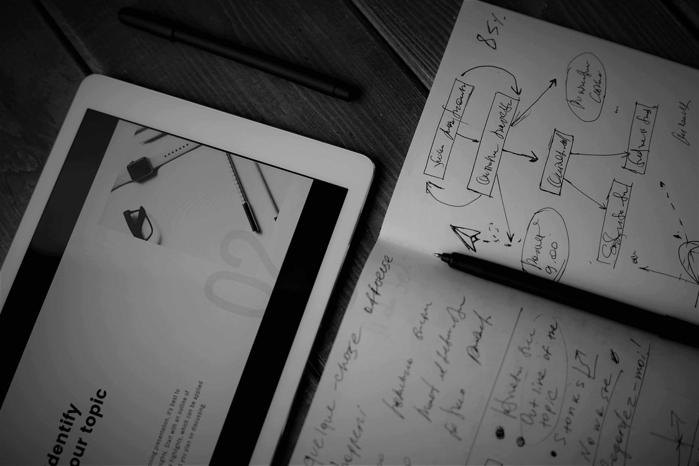

n°01 del 30/03/2025 - 6:11 di lettura Metodo, visione e comunicazione per generare impatto  Chiarezza e Coraggio nel Project Management. C’è un momento, in ogni progetto, in cui il piano non basta. Le scadenze si stringono, le persone si muovono, le decisioni pesano. È lì che il Project Management mostra la sua vera natura: non come un foglio Excel, ma come una forma di leadership. Per troppo tempo è stato visto come un esercizio tecnico, una sequenza di Gantt e deliverable. Ma oggi il Project Management è chiamato a fare molto di più: generare impatto, guidare il cambiamento, costruire valore. Cosa fa il project manager? Il project manager è la persona incaricata dalla Performing Organization di guidare il gruppo responsabile del raggiungimento degli obiettivi del progetto. - fonte: Project Management Institute (PMI) PMbok 7 Nel mondo Agile il Project Manager è un servant leader, sposta l’enfasi sul coaching delle persone che desiderano aiutare, favorendo una maggiore collaborazione nel team e allineando le esigenze degli stakeholder. - fonte: Project Management Institute (PMI) Agile Practice Guide Quali sono i compiti di un project manager? Tra i principali: definizione degli obiettivi, gestione del team, controllo dei costi, monitoraggio dei rischi e comunicazione con gli stakeholder. Chiarezza: la bussola del team La chiarezza è il primo atto di leadership. Senza obiettivi chiari, il team naviga a vista. Con obiettivi definiti, invece, si crea allineamento, motivazione e direzione. La chiarezza non è solo precisione. È anche trasparenza, coerenza, visione condivisa. Obiettivi Cristallini: Ogni membro deve sapere cosa si sta cercando di raggiungere e perché. Pianificazione Dettagliata: Tecniche come il Rolling Wave Planning permettono di pianificare in dettaglio solo la fase corrente, mantenendo flessibilità e visione. Strategia di Comunicazione: Un team charter che definisce ruoli, responsabilità e aspettative comunicative è essenziale per evitare ambiguità. Vuoi approfondire come la comunicazione strategica costruisce cultura e fiducia nel team? Leggi l'articolo del blog "Parlare per costruire". Metodo: il sistema operativo del progetto La metodologia è il mezzo, non il fine. Serve un sistema che traduca la strategia in esecuzione misurabile. Ogni fase è pensata per generare valore, non solo per rispettare scadenze. Diagnosi Strategica; Pianificazione Integrata; Esecuzione; Monitoraggio e misurazione; Apprendimento e Evoluzione. Scopri come la comunicazione può prevenire e risolvere i conflitti nel team. Leggi l'articolo del blog "Parlare per disinnescare". Coraggio: la forza di decidere Il coraggio è ciò che trasforma un buon project manager in un leader. È la capacità di prendere decisioni difficili, affrontare l’incertezza, uscire dalla zona di comfort. Decisioni non Popolari: A volte ciò che è giusto per il progetto non è ciò che è facile. Adattamento Continuo: Valutare, correggere, evolvere. Ogni fase è un’opportunità di apprendimento. Leadership Autentica: Il coraggio si manifesta anche nel dare voce al team, nel creare uno spazio sicuro per il confronto. Comunicazione: il collante del progetto Un progetto non vive nei documenti. Vive nelle conversazioni. La comunicazione efficace è ciò che tiene il team allineato, motivato e reattivo. Strategie per migliorare la comunicazione: Strategia Formale: Definire obiettivi e canali nel team charter. Strumenti Visivi: Teams, Zoom, Miro ovvero il digitale come ponte. Ripetizione Intelligente: I messaggi chiave vanno ribaditi e documentati, non solo detti. Partecipazione Attiva: Un team che comunica e ascolta è un team che cresce. Evoluzione: il progetto come organismo vivente Ogni progetto è una possibilità di apprendimento. Alla fine di ogni fase, serve fermarsi, valutare, adattare. Il feedback continuo è ciò che trasforma l’esperienza in competenza. In sintesi: il project manager come stratega Il project manager non è più solo un pianificatore ma è un traduttore tra visione e realtà; un facilitatore del cambiamento. Chiarezza e coraggio non sono soft skill ma sono fondamenta. Insieme, creano un ambiente in cui i progetti possono prosperare, evolvere e generare impatto positivo. Vuoi parlarmi del tuo prossimo progetto? Usa il modulo qui sotto per raccontarmi le tue esigenze. Possiamo confrontarci su una soluzione su misura, pensata per generare valore reale. Rispondo personalmente a ogni richiesta. Nessun automatismo, solo confronto reale. Compila il form cliccando su questo bottone